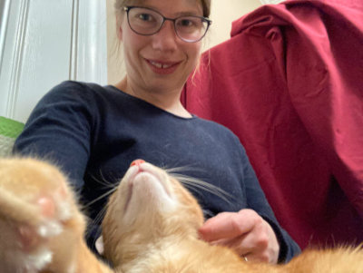
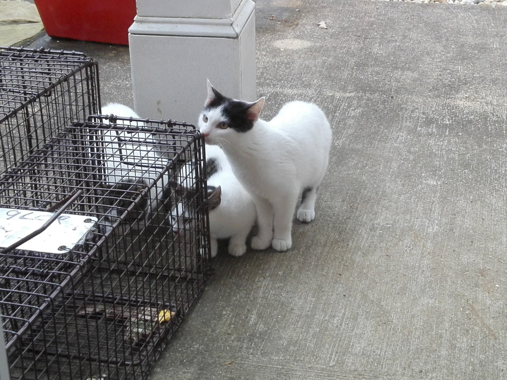

Introducing: Fantastic Feral Felines and Myself

How I ended up living in Oxford, Mississippi still surprises myself but how that life came to include 7, at one point 8, feral cats in our home is another level of unplanned goodness and life just happening when opening your heart and home to your surroundings. Besides our previously feral cats, we occassionally take in other ferals, strays, or cats of acquaintances if they are injured or before and after their spay/neuter surgeries. So far, 11 cats has been our maximum number of cats when mama Aines and he kittens Molly and Marilyn spent some time at our place when getting spayed.
I came to Oxford as an exchange student and scholar for the Fall and Spring semesters 2015/2016. At the time, I was pursuing my PhD in American Studies at Johannes Gutenberg University in Mainz, a smaller city in Germany. But my home village Oppershofen was still a rural place where I and my siblings would walk down a path by our house to my relative's barn and pick up fresh milk in a pink plastic milk jug for 1 Deutsche Mark per liter. Of course, this barn was my first exposure to cats. As a family though we did not have any pets, until we found three kittens on our property. One of these kittens, Emil, a black and white boy cat, came to live with us as an outdoor cat with shelter in our garage. Back then I never heard of overpopulations of strays or feral cats. That issue only confronted me once I started living in Oxford, MS.
It all started with my husband and I finding a feral mom cat with her three kittens in our backyard. We started feeding them but had to watch them eat and play from behind our window as they were too afraid to let us near them. As cute as they were, we worried what would happen if they grew up and started multiplying. We encountered 2 problems: 1) How to get them fixed when we could not even touch them, and 2) How to afford 4 surgeries?
After talking to a neighbor and acquaintance from work, we were told about an organization called 9 Lives Cat Rescue that assisted the community in Oxford to trap, fix, and return feral and stray cats with equipment, logisitics, and financially. I contacted the head of the organization, Natascha, and she provided us with two humane animal traps and left instructions on how to set them, and who to call after we successfully trapped our kittens and mom cat.

The three kittens, two girls and a boy as it turned out later, eventually walked into the baited trap, and we pulled the string to remove the wooden stick that held open the trap door. Another volunteer from 9 Lives then collected the kittens, took them to the veterinary clinic for their sugeries, and later recovered them at their home for 3 days before returning them to our backyard. This is how my involvement with 9 Lives and the trap-neuter-return program started.
This Website
On the other pages of this website, I encourage you to discover the story of our cats, including our temporary fosters, learn more about 9 Lives, the trap-neuter-return program, and ways you can volunteer, consult resources about feral cat well-being and TNR, and find the form necessary to request TNR help.